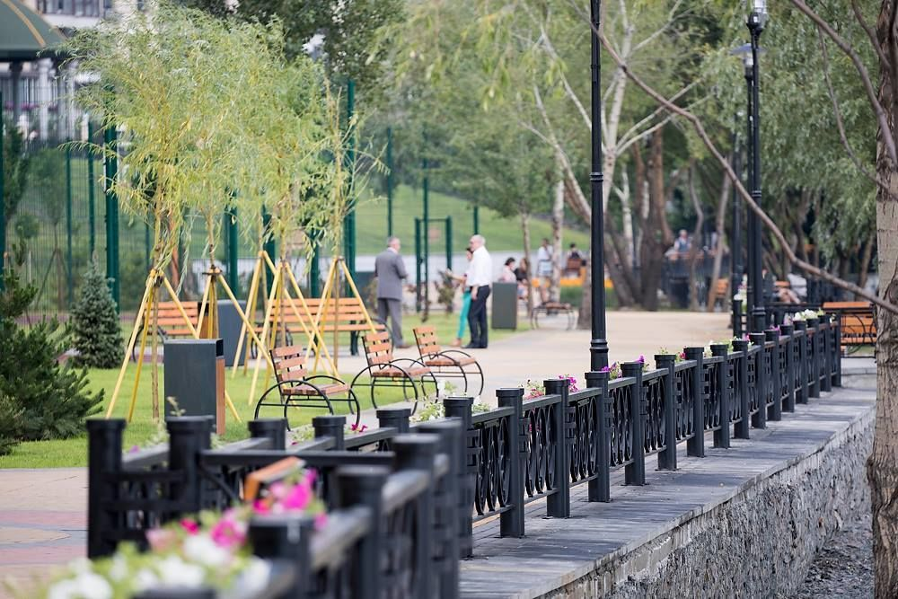
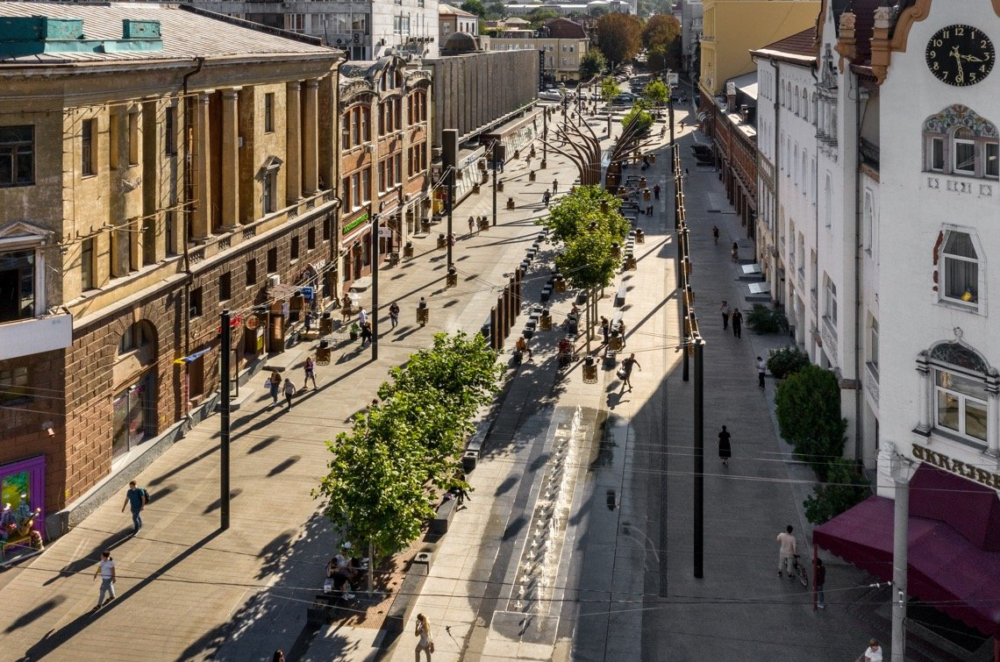
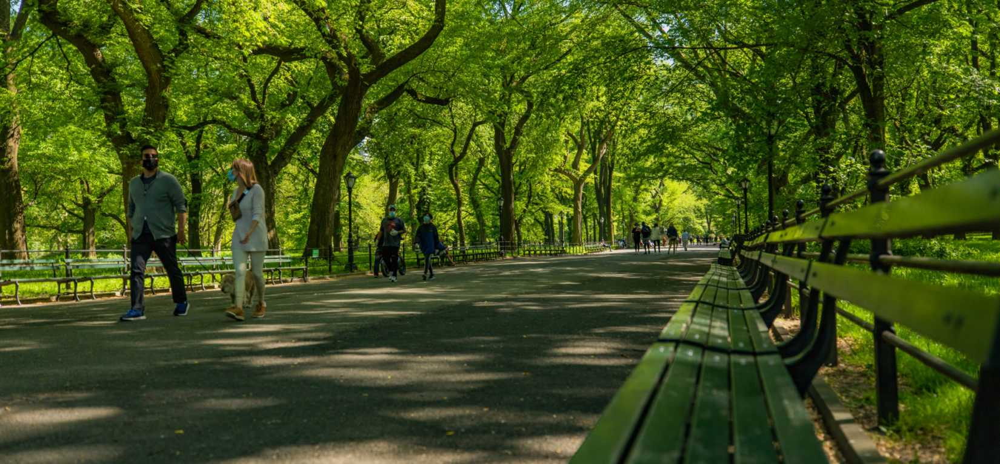
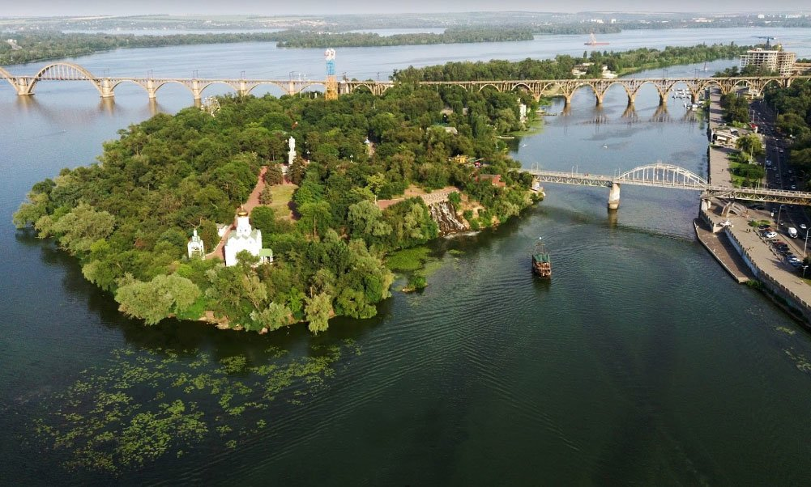
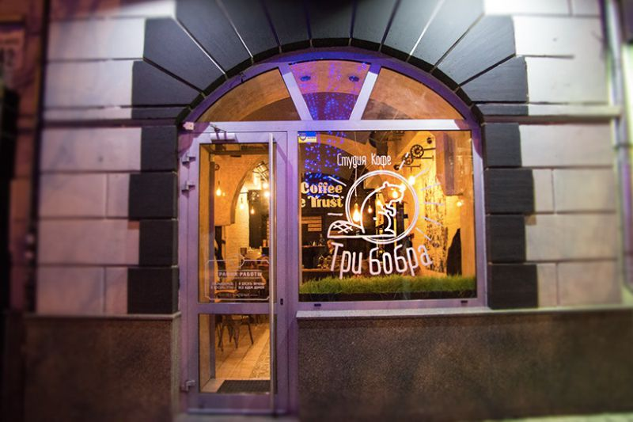
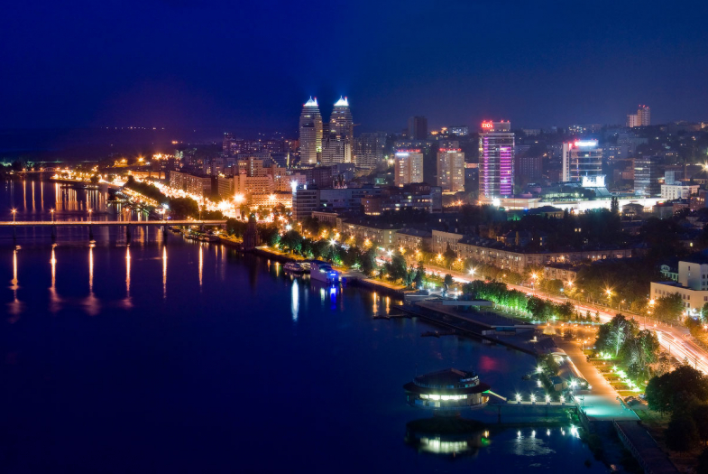

🖼️ Фото-натхнення
Натхнення для маршруту “парк + тиша”
Текстури міста і світлотінь
Зелений коридор для прогулянки
Вода + місто = ідеальна пара
Пауза на каву — частина маршруту
Вечірні вогні для фіналу прогулянки
Галерея локацій
Добірка кадрів, які задають настрій: вода, вулиці, зелень, кава та вечірні вогні. Використай як натхнення для свого маршруту.





